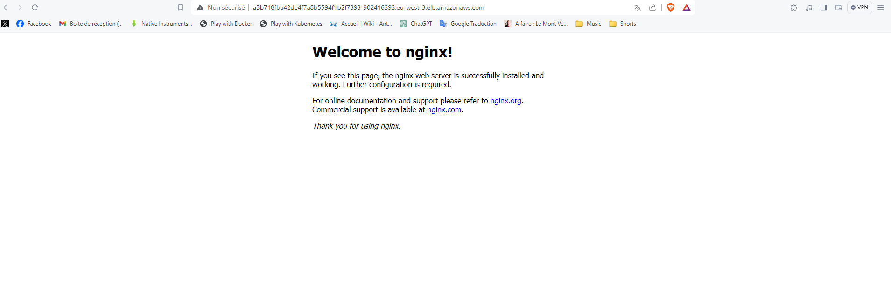

Create an EC2 instance + deploy Jenkins with Terraform
main.tf:
This main Terraform file defines the resources needed to create an EC2 instance on AWS and deploy Jenkins on it. It includes configurations for security, networking, and instance specifications.
security_groups (main.tf):
This file configures the AWS security groups for the EC2 instance, defining the firewall rules necessary to allow access to Jenkins and other associated services.
ec2_instance (main.tf):
This specific file configures the detailed parameters of the EC2 instance, including instance type, storage volume, and tags for resource organization.
jenkins_install.sh:
A shell script to automate the installation of Jenkins on the EC2 instance. It downloads Jenkins, configures the initial settings, and ensures the service starts correctly.
variables.tf:
This file contains all the necessary variables for the deployment configuration, such as AWS credentials, network information, and Jenkins parameters. It makes the script more modular and reusable.
These files, when used together, allow for quick and reliable deployment of a Jenkins instance on AWS using Terraform for infrastructure and shell scripts for the initial Jenkins configuration. GitHub Link
Write Terraform files for EKS and deploy Jenkins pipeline
main.tf:
This main Terraform file configures all the resources needed to set up an EKS cluster on AWS. It orchestrates the creation of the EKS cluster, node groups, and associated resources.
security_groups (main.tf):
This file manages the security groups for the EKS cluster. It includes rules to control incoming and outgoing traffic to and from the Kubernetes nodes and control plane.
eks_cluster (main.tf):
This specific configuration file includes details for creating the EKS cluster, specifying parameters like the Kubernetes version, VPC configuration, and role-based access controls for the cluster.
node_groups.tf:
This file defines the node groups for the EKS cluster. It includes details on instance types, scaling policies, and bootstrap configurations needed for the nodes to join the cluster.
variables.tf:
This file contains the variable definitions used in Terraform configurations. Variables such as AWS region, cluster name, and instance types are defined here, making the configuration more flexible and reusable.
These files, when used together, facilitate the deployment and management of an EKS cluster on AWS using Terraform, ensuring a scalable and automated infrastructure. GitHub Link
After all, the Jenkins pipeline script (Script) automates the deployment of an EKS cluster on AWS using Terraform. It includes stages for:
- checking out the source code,
- initializing,
- formatting,
- validating, planning, and applying Terraform configurations,
- Finally, it deploys an Nginx application on the EKS cluster using kubectl.
The pipeline also incorporates user interaction to confirm before proceeding with the deployment.
Deploy Nginx on AWS and access it with ELB
The last stage of the pipeline is deploying an nginx application in the cluster. We can try to reach it out from the AWS ELB link and see if it's work:
